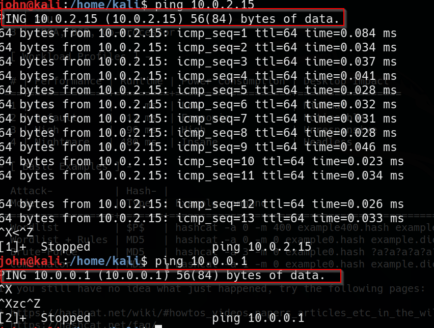

ifconfig : ip adresses, mac adresses etc.
iwconfig : ifconfig's wireless version
ping : it is used to understand whether a computer in network or not

netstat -ano

arp -a

route : it gives you route table which gives you where your traffic exits essentially